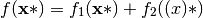
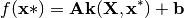
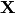
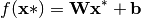
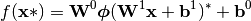
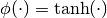

GPy.mappings package¶
Submodules¶
GPy.mappings.additive module¶
-
class
GPy.mappings.additive.Additive(mapping1, mapping2, tensor=False)[source]¶ Bases:
GPy.core.mapping.MappingMapping based on adding two existing mappings together.

Parameters: - mapping1 (GPy.mappings.Mapping) – first mapping to add together.
- mapping2 (GPy.mappings.Mapping) – second mapping to add together.
- tensor (bool) – whether or not to use the tensor product of input spaces
GPy.mappings.kernel module¶
-
class
GPy.mappings.kernel.Kernel(X, output_dim=1, kernel=None)[source]¶ Bases:
GPy.core.mapping.MappingMapping based on a kernel/covariance function.

Parameters: - X (ndarray) – input observations containing 
- output_dim (int) – dimension of output.
- kernel (GPy.kern.kern) – a GPy kernel, defaults to GPy.kern.RBF
GPy.mappings.linear module¶
-
class
GPy.mappings.linear.Linear(input_dim=1, output_dim=1, name='linear')[source]¶ Bases:
GPy.core.mapping.Bijective_mappingMapping based on a linear model.

Parameters: - X (ndarray) – input observations
- output_dim (int) – dimension of output.
GPy.mappings.mlp module¶
-
class
GPy.mappings.mlp.MLP(input_dim=1, output_dim=1, hidden_dim=3)[source]¶ Bases:
GPy.core.mapping.MappingMapping based on a multi-layer perceptron neural network model.

where

Parameters: - X (ndarray) – input observations
- output_dim (int) – dimension of output.
- hidden_dim (int or list of ints.) – dimension of hidden layer. If it is an int, there is one hidden layer of the given dimension. If it is a list of ints there are as manny hidden layers as the length of the list, each with the given number of hidden nodes in it.